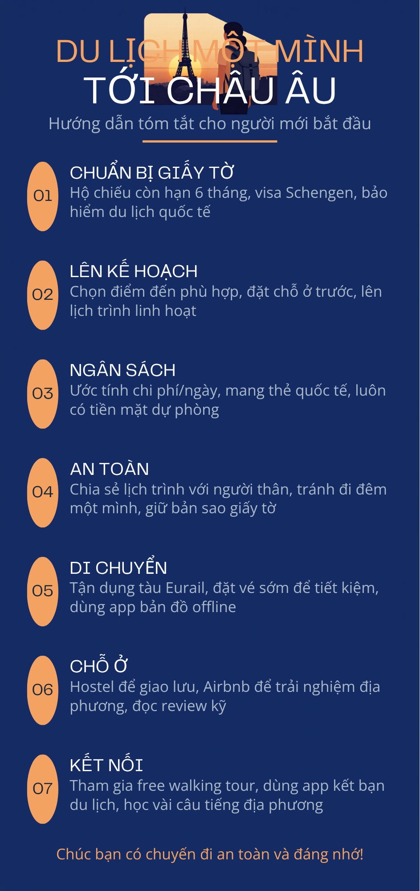

Sử dụng AI tạo sinh để hỗ trợ sáng tạo nội dung
Bài thực hành giúp mình tiếp cận tới đa dạng các AI tạo sinh với mỗi một vai trò khác nhau, từ đó củng cố thêm các kiến thức mới về thực hành với trí tuệ nhân tạo.
↓ Xem báo cáo PDFAI tạo sinh hỗ trợ sáng tạo nội dung
Trong chủ đề này, mình thực hành sử dụng ba công cụ AI tạo sinh gồm ChatGPT, DALL·E và Canva AI để hỗ trợ tạo nội dung học tập. Mỗi công cụ được sử dụng cho một nhiệm vụ khác nhau nhằm đánh giá khả năng, ưu điểm và hạn chế của AI trong quá trình sáng tạo.
1. Công cụ AI tạo văn bản (ChatGPT)
ChatGPT được sử dụng để tóm tắt tài liệu học thuật, giải thích khái niệm và hỗ trợ xây dựng nội dung báo cáo.
Prompt sử dụng
Lập một dàn ý tóm tắt về chủ đề "Du lịch một mình (solo trips) tới Châu Âu" cho một infographic để giới thiệu và cung cấp những gì ần thiết cho những người quan tâm đến du lịch một mình.
Kết quả do ChatGPT tạo
🌍 SOLO TRIPS TO EUROPE
Hướng dẫn dành cho người muốn du lịch một mình tại Châu Âu.
- Lợi ích: Tự do lựa chọn lịch trình, khám phá bản thân, tăng sự tự tin và mở rộng các mối quan hệ.
- Điểm đến gợi ý: Italy, Portugal, Netherlands và Spain.
- Chuẩn bị: Hộ chiếu, visa, bảo hiểm du lịch, vé máy bay, chỗ ở và bản đồ ngoại tuyến.
- Mẹo an toàn: Giữ bản sao giấy tờ, tránh khu vực vắng vào ban đêm, chia sẻ lịch trình với người thân.
- Ngân sách: Khoảng 400–1.300 EUR cho chuyến đi 7–10 ngày.
- Ứng dụng hữu ích: Google Maps, Google Translate, Rome2Rio và Booking.com.
- Thông điệp: "Travel alone, but never feel lonely."
ChatGPT giúp tiết kiệm đáng kể thời gian đọc tài liệu, đồng thời hỗ trợ diễn đạt nội dung rõ ràng, logic và phù hợp với sinh viên.
2. Công cụ AI tạo hình ảnh (DALL·E)
DALL·E được sử dụng để tạo hình minh họa phục vụ chủ đề du lịch châu Âu.
Prompt sử dụng
Summarized instructions for people who want to do solo trip to Europe, which is also suitable for an infographic.
Hình 5.1. Hình minh họa được tạo bằng DALL·E.
DALL·E tạo ra hình ảnh có tính sáng tạo cao, màu sắc hài hòa và phù hợp để minh họa nội dung học tập. Tuy nhiên, đôi khi cần điều chỉnh prompt nhiều lần để đạt kết quả mong muốn.
3. Công cụ AI hỗ trợ thiết kế (Canva AI)
Canva AI được sử dụng để thiết kế infographic từ nội dung đã xây dựng. Đây là công cụ giúp tạo bố cục đẹp mắt và trực quan chỉ trong thời gian ngắn.
Prompt sử dụng
Thiết kế một infographic với nội dung là tóm tắt những điều quan trọng trong việc hỗ trợ, giới thiệu cho người muốn thực hiện du lịch một mình tới Châu Âu.

Hình 5.2. Infographic được thiết kế bằng Canva AI.
Canva AI hỗ trợ tự động đề xuất bố cục, biểu tượng và màu sắc, giúp infographic trở nên trực quan và chuyên nghiệp hơn. Tuy nhiên, người dùng vẫn cần chỉnh sửa nội dung để đảm bảo tính chính xác.
Đánh giá kết quả
| Công cụ | Ưu điểm | Hạn chế |
|---|---|---|
| ChatGPT | Tóm tắt nhanh, hỗ trợ diễn đạt học thuật. | Cần kiểm chứng thông tin. |
| DALL·E | Tạo hình ảnh sáng tạo, màu sắc đẹp. | Cần tối ưu prompt nhiều lần. |
| Canva AI | Bố cục đẹp, chỉnh sửa dễ dàng. | Nội dung cần rà soát thủ công. |
AI làm tốt gì?
- Tạo ý tưởng ban đầu (brainstorming).
- Tăng tốc độ sáng tạo nội dung.
- Xử lý và tổng hợp lượng lớn thông tin.
- Hỗ trợ cá nhân hóa sản phẩm sáng tạo.
AI còn hạn chế gì?
- Có thể tạo thông tin chưa hoàn toàn chính xác.
- Không thay thế được tư duy phản biện của con người.
- Chất lượng phụ thuộc vào prompt.
- Cần người dùng kiểm tra và chỉnh sửa đầu ra.
Các vấn đề đạo đức
- Bản quyền và sở hữu trí tuệ.
- Minh bạch về việc sử dụng AI.
- Tính nguyên bản và xác thực.
- Thiên vị trong nội dung.
- Trách nhiệm đối với sản phẩm AI tạo ra.
- Tác động đến việc làm và ngành công nghiệp sáng tạo.
Kết luận
Qua bài thực hành, mình nhận thấy AI tạo sinh là công cụ hỗ trợ hiệu quả trong học tập. ChatGPT giúp xử lý và tóm tắt văn bản, DALL·E hỗ trợ tạo hình minh họa sáng tạo, còn Canva AI giúp thiết kế infographic nhanh chóng và chuyên nghiệp. Tuy nhiên, người học vẫn cần đánh giá, kiểm chứng và sử dụng AI một cách có trách nhiệm để đảm bảo tính chính xác và đạo đức học thuật.
Xem Bài 6 →